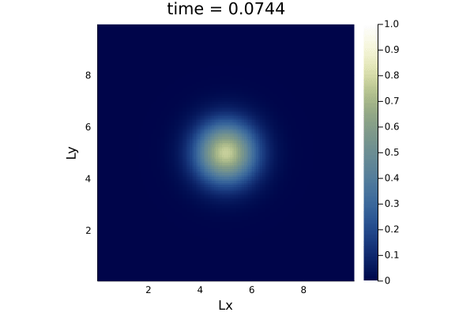
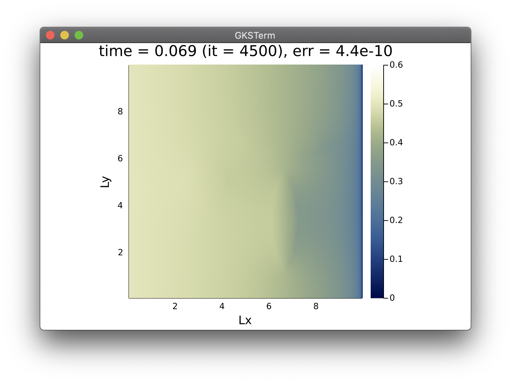

Agenda
📚 Implicit and steady-state solutions
💻 Julia'sProjectenvironment
🚧 Exercises:
Porous convection in 2D
...
The diffusion equation
Spatial discretisation: 1D and 2D
Finite-differences and staggered grids
Accelerated pseudo-transient method
Let's discuss how to implement the acoustic wave equation (and the diffusion equation from last week's material) in 2D.
We want the and axis to represent spatial extend, and solve in each grid point for the pressure or the concentration, for the acoustic and diffusion process, respectively.
But let's first look at the equation, augmenting the Table we just started to fill
| Physics | 1D formulation | 2D formulation |
|---|---|---|
| Diffusion | ||
| Acoustic waves | ||
For both physics
The fluxes which are directional or vector quantities have a new -direction component
The balance equation or divergence, now balances the sum of the fluxes from all dimensions
Let's get started first with the diffusion equation, then the wave equation (as homework).
Add -direction physics and numerics
Update time step definition
Update initial Gaussian condition
Initialise all new arrays
Update physics calculations in the time loop
Update plotting
You can make multi-statement lines for scalars:
Lx, Ly = 10.0, 10.0Take now the most restrictive condition, e.g.:
dt = min(dx, dy)/...Recall that we are using conservative finite-differences and thus a staggered grid.
For 2D grids, we will have to handle scalar quantity and two fluxes as depicted below, taking care about correct staggering:

You can use heatmap() function from Plots.jl, to plot e.g. C as function of the spatial coordinates xc and yc:
heatmap(xc, yc, C')note the transpose '
Use display() to force the display of the plot, e.g., in the time loop every nout.
More advanced implementation, one can define the plotting options and apply them in the heatmap() call:
opts = (aspect_ratio=1, xlims=(xc[1], xc[end]), ylims=(yc[1], yc[end]), clims=(0.0, 1.0), c=:davos, xlabel="Lx", ylabel="Ly", title="time = $(round(it*dt, sigdigits=3))")
display(heatmap(xc, yc, C'; opts...))That's how the 2D diffusion looks like:

Let's get started with 2D.
It's time to launch Julia on your computer 🚀
👉 Download the diffusion_1D.jl script to get you started
On GitHub, make sure to create a new folder for each week's exercises.
Each week's folder should be a Julia project, i.e. contain a Project.toml file.
This can be achieved by typing entering the Pkg mode from the Julia REPL in the tatrget folder
julia> ]
(@v1.8) pkg> activate .
(lectureXX) pkg> add Plotsand adding at least one package.
In addition, it is recommended to have the following structure and content:
lectureXX
README.md
Project.toml
Manifest.toml
docs/
scripts/
Codes could be placed in the scripts/ folder. Output material to be displayed in the README.md could be placed in the docs/ folder.
The Manifest.toml file should be kept local. An automated way of doing so is to add it as entry to a .gitignore file in the root of your repo. Mac users may also add .DS_Store to their .gitignore.
👉 See Logistics for submission details.
The goal of this exercise is to:
Implement a 2D nonlinear diffusion equation
Consolidate the finite-difference discretisation
In this first exercise, you will port the shallow ice-like 1D nonlinear diffusion code we did in class to a 2D implementation.
Starting from the 1D nonlinear diffusion equation we discussed in lecture 4, extend the 1D code to a 2D configuration. Use the same parameters for the -dimension quantities as the one you already have for the -dimension.
Create a new folder in your GitHub repository for this week's (lecture 4) exercises. In there, create a new Julia script diffusion_nl_2D.jl for this homework. The script should produce a heatmap() plot that updates upon time steps, with labelled axes and physical time displayed as title.
Use nx = 128 and ny = 129 grid points.
Track the maximal ice thickness over time and report it in a plot as function of time.
👉 See Logistics for submission details.
The goal of this exercise is to:
Investigate second-order acceleration
Derive scaling relation (number of iterations as function of number of grid points)
In this exercise you will investigate the scalability of the first and second order iterative schemes discussed during lecture 4.
Start from the Laplacian_damped.jl script we realised in class, which should contain two "switches":
order (1st or 2nd order scheme)
fact (factor to multiply the number of grid points)
👉 Download the Laplacian_damped.jl script here if needed (available after the course).
Add a copy of the Laplacian_damped.jl script we did in class to your exercise folder. Modify that script to perform systematics to assess the scalability of the damped versus the non-damped Laplacian 2D implementation.
As first task, modify the iteration exit criteria such that the you can report the iteration count needed for maximum(abs.(A)) to hit an absolute tolerance of ε = 1e-9.
Using this modified code, realise a scaling experiment where you report the total number of iterations needed to reach ε as function of the number of grid points nx, for nx = 25 * 2 .^ (1:8). Repeat the experiment for both the damped and non-damped implementation (using e.g. the order flag).
Report your scaling results on a figure, plotting the number of iterations as function of the number of grid points. Save the figure as png and include it to the lecture 4 README.md. Comment the trends you observe.
 to insert a figure in the README.md.Investigate the effect of varying the damping parameter dmp on the iteration count, thus on the scaling. Add an additional figure to the README.md and comment about it.
👉 See Logistics for submission details.
The goal of this exercise is to:
Investigate second-order acceleration
Implement a fast implicit nonlinear diffusion solver
In this exercise you will transform the explicit nonlinear 1D diffusion solver to achieve a steady state solution, and, in a second step, achieve a fast solution relying on the second-order implementation. The model could be applied, e.g., to predict spatial distribution of pollutant in the subsurface.
To get started, save a copy of the diffusion_nl_1D.jl script we did in class (also available here after the lecture), name it diffusion_nl_1D_steady_1.jl, and implement the changes tasked below.
As first task, adapt the parameters and the implementation. In the # Physics section, set the total simulation time ttot = 2e4 and move the D0 initialisation to the # Array initialisation section.
In the # Numerics section, add the nonlinear tolerance the solver should converge to, epsi = 1e-10.
Since we are interested in a concentration, rename the quantity to be diffused from H to C, and initialise it as a Gaussian profile centred in with standard deviation and amplitude of 0.5.
Initialise the diffusivity D0 = 5 in every grid point of the domain. In the region , the subsurface is less permeable thus the values of D0=1.5. Also, initialise all arrays that would require it.
Finally, as boundary conditions, fix the concentration in the left () and right () cell centre to 0.5 and 0.1, respectively.
Define the time or iteration loop to, e.g., run from t=0 until t=ttot, and to abort if the error drops below epsi. Note that another implementation of your choice of the loop is fine too. Define the error as the maximum(abs.(∆C)), where ∆C is the difference between the values of concentration before and after the update at every iteration or time step (you can use unicode characters in Julia).
Report graphically the distribution of the concentration C as function of x, adding axes labels and a title reporting time, iteration count and current error.
As you realised, it takes a large amount of iterations to converge the transient problem to a steady state. In this second task, you will accelerate the nonlinear diffusion solver using the second order method.
Duplicate the diffusion_nl_1D_steady_1.jl and rename the copy to diffusion_nl_1D_steady_2.jl.
Then, add to the # Numerics section a relaxation factor rel = 0.1 that we will use to implement a continuation on the nonlinear diffusion coefficient.
In the # Derived numerics section, add the damping factor dmp = 1.0 - 2π/nx, which is the value that will most optimally damp the damped-wave equation we will solve using the second order method.
Initialise the effective diffusion coefficient array D to 1, setting the initial guess for the relaxation.
In the time or iteration loop, implement the relaxation (or continuation) on the effective diffusion coefficient array D, such that at each iteration, (1-rel) from the previous values of D is being added to rel times the new value, computed as (D0.*C).^n (the physical expression of D).
Because we are only interested in the final distribution of C, at steady-state, the time step dt turns in a numerical parameter that no longer needs to be a scalar; it should be defined locally to each grid point; we do no longer need the global reduction maximum(D). Adapt the dt formula to use the local maximum amongst direct neighbouring grid points for D (in every point of the domain).
maxloc() function could be defined as such @views maxloc(A) = max.(A[1:end-2],A[2:end-1],A[3:end]).Finally, and most important, modify the dCdt update operation to incorporate the damping term applied to the values of dCdt from the previous iteration. To implement the second order scheme, turn the dCdt assignment to an update, where you add to current definition of dCdt previous values of dCdt*dmp:
dCdt .= dCdt.*dmp .+ ...Report graphically the distribution of the concentration C as function of x, adding axes labels and title reporting iteration count and current error.
Reflect on the speed-up obtained by the second-order method and feel free to add a comment about it.
🎉 Well-done! This was a long one. Here is a sample output the code should produce:

👉 See Logistics for submission details.
The goal of this exercise is to:
Investigate second-order acceleration
Implement a fast implicit nonlinear diffusion solver in 2D
In this exercise you will transform the fast implicit nonlinear diffusion 1D solver from Exercise 3 to 2D.
To get started, save a copy of the diffusion_nl_1D_steady_2.jl script from Exercise 3 - Task 2, and name it diffusion_nl_2D_steady_2.jl.
You will port the 1D code to 2D, duplicating, if needed, all parameters from the -dimension to the -dimension. (You can keep the definition of the damping term only function of nx since your domain is square.)
In the # Array initialisation, use following functions to initialise 3 ellipses where the background subsurface permeability is reduced from D0 = 5.0 to D0 = 1.5:
rad2_1 = (xc .- 2*Lx/3).^2 .* 3 .+ (yc' .- Ly/3).^2 ./ 4
rad2_2 = (xc .- 2*Lx/3).^2 ./ 4 .+ (yc' .- 2*Ly/3).^2 .* 3
rad2_3 = (xc .- Lx/3).^2 .* 1 .+ (yc' .- Ly/2).^2 ./ 1Use these "radius" functions to set the values of D0 = 1.5 when the radius is smaller then 1.0 (for all 3 cases).
As boundary conditions, set C = 0.5 at and C = 0.1 at . Implement a "no-flux" boundary condition ( vanishes in the direction orthogonal to the boundary) at and .
maxloc() function for 2D purposes, taking the local maximum amongst all 8 neighbours for each grid point.Report graphically the distribution of concentration C as function of x and y using a heatmap plot, adding axes labels and title reporting time, iteration count and current error.
Here is a sample output the code should produce:
